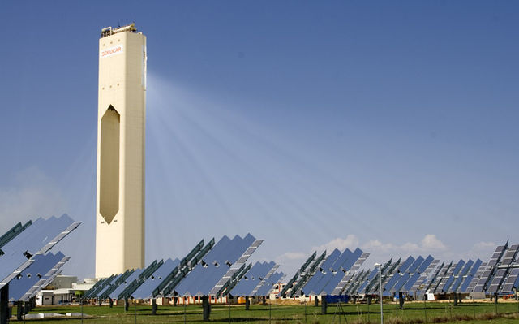

Se dice que la energía es la capacidad de un cuerpo o sistema para realizar un trabajo o generar cambios en otros sistemas, y se puede presentar en forma de movimiento, calor, altura...
En los apartados siguientes tendremos ocasión de conocer las fuentes de energía y hacer algunos cálculos de rendimiento para ellas.
Pero, ¿es lo mismo la forma de manifestarse la energía que las fuentes de las que las obtenemos? ¿En qué se diferencian formas y fuentes de energía?

Central térmica solar de I+D+i, en Sanlúcar la Mayor (Sevilla)
Imagen de afloresm en Wikimedia Commons. Licencia CC.
La energía eólica, hidráulica y solar, por ejemplo, son fuentes de energía, pues obtenemos de ellas la energía primaria para producir la eléctrica. Sin embargo, las formas en que se manifiestan estas fuentes son de los tipos elementales que ya has estudiado:
Energía eólica: fuente que aprovecha la energía cinética del viento.